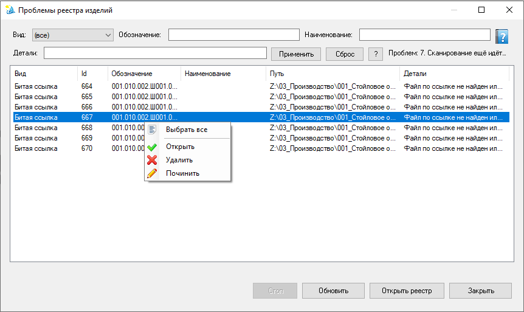

Проблемы реестра документов
Сводка нарушений целостности реестра документов: битые ссылки, отсутствие чертежа, документы вне реестра, дублирование обозначений, а также проблемы флота DXF/PDF (когда соответствующие документы SOLIDWORKS закрыты).
Как открыть
Из реестра документов (связанные команды/уведомления) или по сценарию помощника, который показывает список проблем. Фоновый планировщик периодически обновляет виды проблем.

Форма проблем: сверху фильтры (Вид / Обозначение / Наименование / Детали), список с контекстным меню (Выбрать все, Открыть, Удалить, Починить). Внизу — Стоп, Обновить, Открыть реестр, Закрыть; индикатор прогресса появляется только при массовом открытии.
Фильтры
- Вид — выпадающий список типов проблем (или «(все)»).
- Обозначение, Наименование, Детали — текстовые маски (см. маски фильтров).
- Кнопки Применить / Сброс / ?; Enter в текстовых полях тоже применяет фильтры.
Счётчик «Проблем: N» рядом с кнопками фильтра показывает число строк в текущем (отфильтрованном) списке. У одной записи реестра показывается только наиболее важный вид (например, «Битая ссылка» перекрывает «DXF устарел»).
Столбцы списка
- Вид — тип проблемы (например, «Нет чертежа»).
- Id, Обозначение, Наименование — реквизиты записи реестра.
- Путь — путь к файлу модели.
- Детали — краткое пояснение (например, нет свойства «путь чертежа»).
Щелчок по заголовку столбца сортирует список.
Базовые виды
| Вид | Описание | Типичные действия |
|---|---|---|
| Битая ссылка | Запись указывает на отсутствующий файл. | Починить путь в карточке или удалить запись. |
| Нет чертежа | Для изделия ожидается чертёж (свойство документа «Нужен чертеж = Yes» / зеркало в реестре), но он не найден / нет свойства пути. Также помечается, если геометрия модели изменилась — см. геометрические штамбы. | Завести чертёж и прописать «путь чертежа»; либо снять ожидание в свойствах модели / пунктом Не нужен чертеж в пакетном PDF; при необходимости — «Починить». |
| Нет в реестре | Открытый документ SOLIDWORKS не найден среди записей реестра (тот же путь). | Добавить запись или закрыть/игнорировать документ. |
| Дублирование обозначения | Две и более записей занимают один ключ уникальности — обозначение + расширение файла связанного документа (регистр расширения не учитывается). Проблема ставится на каждую запись группы: в списке видны оба конфликта пары, в «Деталях» — Id и путь конфликтующей записи. Проверяется при отсутствии открытых документов; метрика Velum.Registry.HasDuplicateDesignations. | Починить — открыть карточку записи и задать свободное обозначение (либо отвязать файл). Лишнюю запись можно Удалить. Исторические дубли, возникшие до введения правила, в реестре сохраняются, пока их не разведут. |
Флот DXF
Проверяется по зеркалу метаданных и файловой системе, когда документы закрыты. Связано со свойствами «Нужен dxf», «Путь dxf», штампом геометрии и отпечатком файла.
| Вид | Описание |
|---|---|
| Нужен экспорт DXF | DXF отсутствует или не соответствует ожидаемой выгрузке при «Нужен dxf = Да». |
| DXF устарел | Файл есть, но геометрия/отпечаток модели изменились. |
| Нет проекции DXF | Не задан/не найден ожидаемый режим проекции для выгрузки. |
| Каталог DXF недоступен | Путь из «Путь dxf» недоступен. |
| Первая выгрузка DXF | Нет канонического «Путь dxf» — первую выгрузку делают через экспорт DXF. |
| Мусорный DXF | Файл есть при «Нужен dxf = Нет» у этой конфигурации или подменён неожиданным содержимым. |
Флот PDF
| Вид | Описание |
|---|---|
| Нужен экспорт PDF | PDF отсутствует при необходимости выгрузки. |
| PDF устарел | Файл есть, но версия/штамп чертежа новее ИЛИ геометрия модели изменилась с момента экспорта (ModelGeometryStamp > PdfModelStampAtExport в реестре). Подробнее… |
| Мусорный PDF | PDF присутствует при «Нужен pdf = Нет» или не соответствует учёту. |
Геометрические штамбы (DXF-маркеры устаревания)
Для отслеживания изменений геометрии детали в свойства документа записываются два штамба:
Штамп геометрии dxf (update) и
Штамп изменения геометрии dxf (pending).
Они инициализируются при первом открытии детали и обновляются при каждом изменении геометрии.
Логика: если pending > update — геометрия модели была изменена
с момента последнего экспорта/проверки. Это сигнал для флота PDF и сканера чертежей, что
соответствующие документы устарели и требуют перегенерации.
Штамбы записываются per-configuration (для каждой конфигурации детали отдельно). Сканер проверяет все конфигурации: достаточно одного сигнала «pending > update» в любой конфигурации, чтобы пометить PDF/чёртёж как устаревший.
Подробнее о штамбах и их назначении — см. страницу геометрических штамбов.
Как идёт сканирование
Проверка целостности запускается фоном, только когда в SOLIDWORKS не открыто ни одного документа (при открытии документа сканирование немедленно прерывается, кэш проблем очищается, метрики сбрасываются в «хорошо»).
После закрытия последнего документа сканирование возобновляется автоматически: уже на следующем пульсе помощник замечает, что документов больше нет, сбрасывает счётчик ожидания и запускает новый проход через N пульсов. То же происходит при включении пульсации, когда документы уже закрыты (или открыты — тогда сканирование, наоборот, встаёт на паузу).
Цикл помощника состоит из пульсов (тактов ISIDA). Тяжёлый фоновый тик запускается раз в N пульсов, где N — настройка «Кратность пульса тяжёлых метрик» (по умолчанию 5). Эта настройка не меняется автоматически: сколько бы времени ни занял проход, периодичность всегда остаётся как задано.
За один тик обрабатывается не весь реестр, а только квант записей (порядка 40–120 позиций в зависимости от вида проблемы). Сканер запоминает позицию и на следующем тяжёлом пульсе продолжает проход с места прерывания, поэтому полный проход всего реестра занимает несколько тиков. Курсоры всех четырёх проходов с обходом по записям (битые ссылки, чертежи, DXF, PDF) независимы и продвигаются в стабильном порядке реестра (по Id записи) — ничего не пропускается и не сканируется повторно в пределах прохода. Проверка дублирования обозначений обращается только к данным самого реестра (без диска), поэтому выполняется целиком за один тик и не требует курсора.
Если предыдущий тик ещё выполняется в фоновом потоке к моменту следующего тяжёлого пульса, этот тик пропускается, а следующий продолжит с сохранённой позиции. Найденные проблемы публикуются по завершении прохода; во время прохода они уже видны в списке и в статусе (пометка «Сканирование ещё идёт…»).
Контекстное меню и кнопки
| Команда | Назначение |
|---|---|
| Выбрать все | Выделить все строки списка. |
| Фильтр по выделенному / Исключить выделенное | По столбцам Обозначение, Наименование, Детали — см. маски фильтров. |
| Открыть | Открыть связанные файлы по пути (если доступны). При выборе более 10 документов — подтверждение, индикатор прогресса и кнопка Стоп. |
| Удалить | Удалить запись(и) из реестра (где применимо). |
| Починить | Исправить проблему — зависит от вида. Для «Битая ссылка» и «Дублирование обозначения» открывает карточку записи (указать путь / свободное обозначение); строки «Нет чертежа» и «Нет в реестре» не решаются этим действием — по ним показывается подсказка. Ошибка сохранения одной записи не прерывает починку остальных. |
| Стоп | Прервать массовое открытие; активна только во время этой операции. |
| Обновить | Перечитать кэш и обновить список проблем (с учётом фильтров). |
| Открыть реестр | Перейти к основной форме реестра документов. |
| Закрыть | Закрыть окно проблем. |
admin. Флаг «Нужен чертеж» в этом окне не меняется — только свойство в документе SOLIDWORKS или пункт Не нужен чертеж в пакетном PDF. Пакетный экспорт для устранения флот-проблем — через DXF пакет / PDF пакет или одиночные диалоги экспорта. Индикатор прогресса скрыт, пока массовое открытие не запущено.